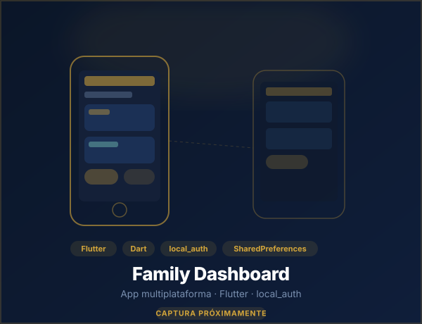
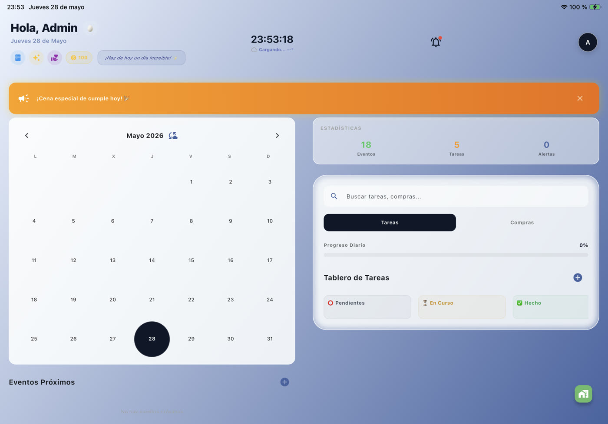
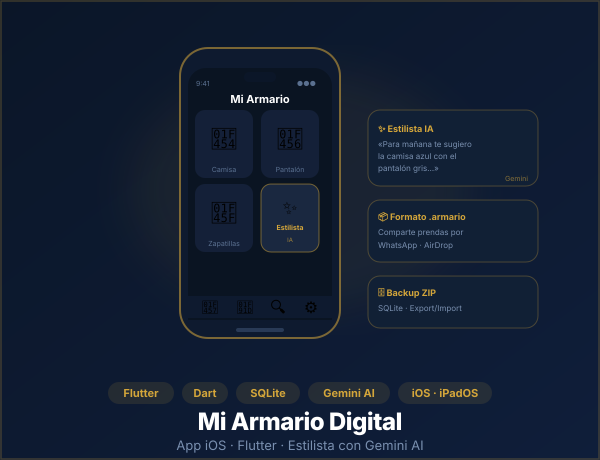
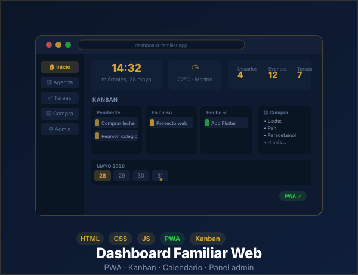
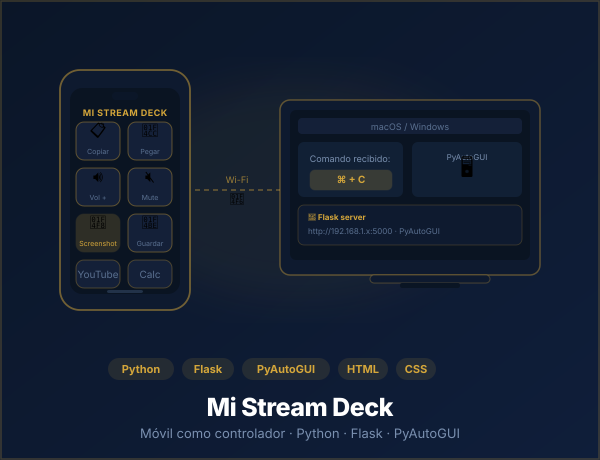
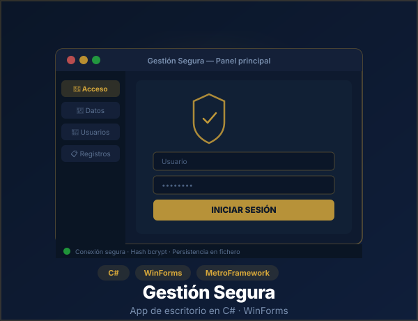

Each project reflects a real problem I set out to solve. From design to deployment, I build solo and with purpose.







Academic projects and exercises (2021–2022) available on GitHub.
Coursework that built the programming foundations I rely on today.
C# desktop app to browse the Pokémon catalogue: main window with a full listing and a detail card screen per creature. Data managed through a local database connection.
Android app for sound playback and management. Practice with Activity lifecycle and multimedia APIs.
Static web page built for the Telefónica Open Day during the company internship period.
Hangman game with a graphical interface, attempt tracking and letter-by-letter guessing logic.
Second implementation of the hangman game, this time in Java with a graphical interface built in NetBeans. Same letter-guessing and attempt logic, different language and environment.
Java calculator with a graphical interface. Practice with events, math operations and Swing components.
Exercise repository to strengthen fundamentals: control structures, arrays, functions and basic OOP.
Frontend examples and exercises: from Hello World to interactive projects with JS and CSS.
First part of an introductory Windows Forms exercise in C#. Practice creating and configuring forms with basic UI components.
First Android app in Java. Starting point for learning the Activity lifecycle and the basic structure of an Android Studio project.
Introductory PHP exercises: Hello World, an interactive quiz with scoring, and basic server-side examples. First hands-on experience with server-side programming.